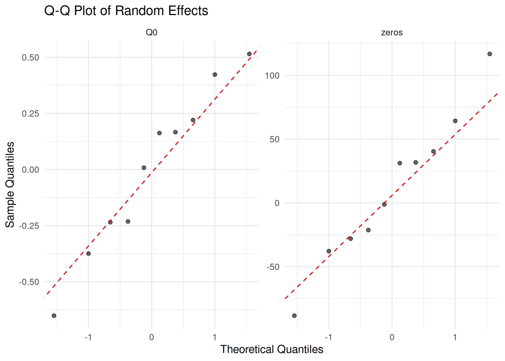
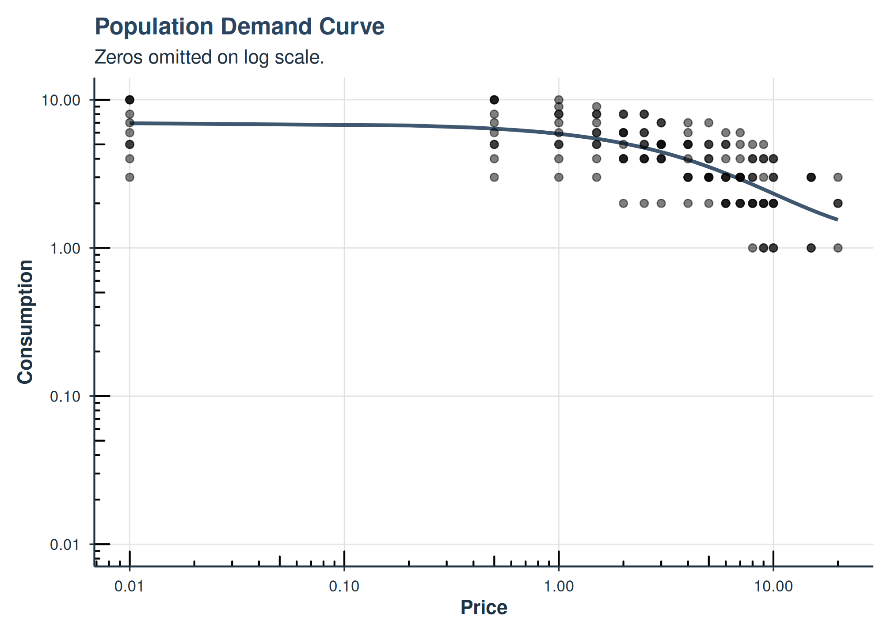
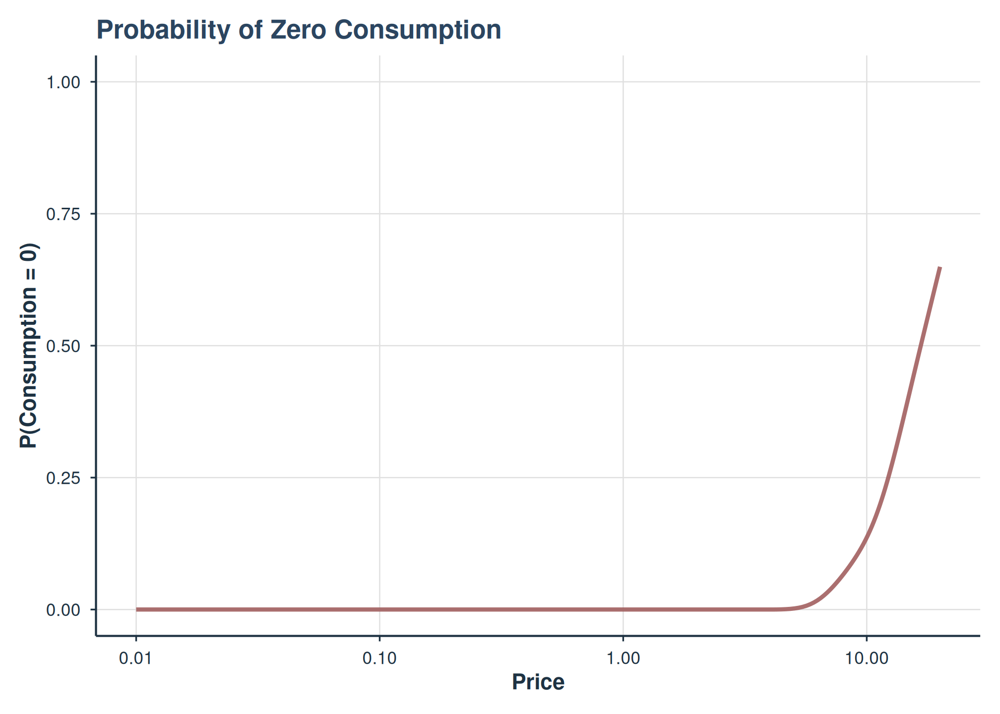

Hurdle Demand Models
Brent Kaplan
2026-04-21
Source:vignettes/hurdle-demand-models.Rmd
hurdle-demand-models.RmdIntroduction
The beezdemand package includes functionality for
fitting two-part mixed effects hurdle demand models
using Template Model Builder (TMB). This approach is particularly useful
when:
- Zero consumption values are informative (i.e., represent true non-consumption rather than censored data)
- You want to model both the probability of consuming and the intensity of consumption simultaneously
- Individual-level heterogeneity is important for both parts of the model
When to Use Hurdle Models vs. Standard Models
| Scenario | Recommended Approach |
|---|---|
| Few zeros, zeros are measurement artifacts |
fit_demand_fixed() or
fit_demand_mixed()
|
| Many zeros, zeros represent true non-consumption | fit_demand_hurdle() |
| Need to understand factors affecting whether someone consumes | fit_demand_hurdle() |
| Need individual-level estimates of “quitting price” | fit_demand_hurdle() |
Model Specification
The hurdle model has two parts:
Part I: Binary Model (Probability of Zero Consumption)
\text{logit}(\pi_{ij}) = \beta_0 + \beta_1 \cdot \log(\text{price} + \epsilon) + a_i
Where:
- \pi_{ij} = probability of zero consumption for subject i at price j
- \beta_0 = intercept (baseline log-odds of zero consumption)
- \beta_1 = slope (effect of log-price on log-odds of zero)
- \epsilon = small constant (default 0.001) for handling zero prices
- a_i = subject-specific random intercept
Part II: Continuous Model (Consumption Given Positive)
With 3 random effects: \log(Q_{ij}) = (\log Q_0 + b_i) + k \cdot (\exp(-(\alpha + c_i) \cdot \text{price}) - 1) + \varepsilon_{ij}
With 2 random effects: \log(Q_{ij}) = (\log Q_0 + b_i) + k \cdot (\exp(-\alpha \cdot \text{price}) - 1) + \varepsilon_{ij}
Where:
- Q_0 = intensity (consumption at price 0)
- k = scaling parameter for exponential decay
- \alpha = elasticity parameter
- b_i = subject-specific random effect on intensity
- c_i = subject-specific random effect on elasticity (3-RE model only)
Getting Started
Data Requirements
Your data should be in long format with columns for:
- Subject identifier
- Price
- Consumption (including zeros)
library(beezdemand)
# Example data structure
knitr::kable(
head(apt, 10),
caption = "Example APT data structure (first 10 rows)"
)| id | x | y |
|---|---|---|
| 19 | 0.0 | 10 |
| 19 | 0.5 | 10 |
| 19 | 1.0 | 10 |
| 19 | 1.5 | 8 |
| 19 | 2.0 | 8 |
| 19 | 2.5 | 8 |
| 19 | 3.0 | 7 |
| 19 | 4.0 | 7 |
| 19 | 5.0 | 7 |
| 19 | 6.0 | 6 |
Basic Model Fitting
# Fit 2-RE model (simpler, faster)
fit2 <- fit_demand_hurdle(
data = apt,
y_var = "y",
x_var = "x",
id_var = "id",
random_effects = c("zeros", "q0"), # 2 random effects
verbose = 0
)
# Fit 3-RE model (more flexible)
fit3 <- fit_demand_hurdle(
data = apt,
y_var = "y",
x_var = "x",
id_var = "id",
random_effects = c("zeros", "q0", "alpha"), # 3 random effects
verbose = 1
)Interpreting Output
# View summary
summary(fit2)
#>
#> Two-Part Mixed Effects Hurdle Demand Model
#> ============================================
#>
#> Call:
#> fit_demand_hurdle(data = apt, y_var = "y", x_var = "x", id_var = "id",
#> random_effects = c("zeros", "q0"), verbose = 0)
#>
#> Convergence: Yes
#> Number of subjects: 10
#> Number of observations: 160
#> Random effects: 2 (zeros, q0)
#>
#> Fixed Effects:
#> --------------
#> Estimate Std. Error z value
#> beta0 -392.08389 146.77189 -2.671
#> beta1 135.79393 50.43534 2.692
#> log_q0 1.93813 0.11712 16.548
#> log_k 0.55505 0.09013 6.158
#> log_alpha -2.31478 0.16822 -13.760
#> logsigma_a 5.76791 1.48290 3.890
#> logsigma_b -1.04114 0.22837 -4.559
#> logsigma_e -1.63184 0.06063 -26.914
#> rho_ab_raw -0.19191 0.23755 -0.808
#>
#> Variance Components:
#> --------------------
#> Estimate Std. Error
#> alpha 0.0988 0.0166
#> k 1.7420 0.1570
#> var_a 102315.9811 303448.4197
#> var_b 0.1246 0.0569
#> cov_ab -21.4106 12.6867
#> var_e 0.0382 0.0046
#>
#> Correlations:
#> -------------
#> Estimate Std. Error
#> rho_ab -0.1896 0.229
#>
#> Model Fit:
#> ----------
#> Log-likelihood: 2.31
#> AIC: 13.38
#> BIC: 41.06
#>
#> Demand Metrics (Group-Level):
#> -----------------------------
#> Pmax (price at max expenditure): 20.0000
#> Omax (max expenditure): 30.9810
#> Q at Pmax: 1.5491
#> Elasticity at Pmax: -0.4772
#> Method: numerical_optimize_observed_domain
#>
#> Derived Parameters (Individual-Level Summary):
#> ----------------------------------------------
#> Q0 (Intensity):
#> Min. 1st Qu. Median Mean 3rd Qu. Max.
#> 3.622 5.496 7.585 7.365 8.544 11.623
#> Alpha:
#> Min. 1st Qu. Median Mean 3rd Qu. Max.
#> 0.09879 0.09879 0.09879 0.09879 0.09879 0.09879
#> Breakpoint:
#> Min. 1st Qu. Median Mean 3rd Qu. Max.
#> 7.591 13.549 16.183 17.986 21.796 34.419
#> Pmax:
#> Min. 1st Qu. Median Mean 3rd Qu. Max.
#> 20 20 20 20 20 20
#> Omax:
#> Min. 1st Qu. Median Mean 3rd Qu. Max.
#> 16.15 24.51 33.83 32.85 38.11 51.85
# Extract coefficients
coef(fit2)
#> beta0 beta1 logsigma_a logsigma_b logsigma_e
#> -392.08388527 135.79392969 5.76791058 -1.04113709 -1.63183780
#> rho_ab_raw Q0 alpha k
#> -0.19191270 6.94572117 0.09878808 1.74202555
# Standardized tidy summaries
tidy(fit2) |> head()
#> # A tibble: 6 × 9
#> term estimate std.error statistic p.value component estimate_scale
#> <chr> <dbl> <dbl> <dbl> <dbl> <chr> <chr>
#> 1 beta0 -392. 147. -2.67 7.55e- 3 zero_probabi… logit
#> 2 beta1 136. 50.4 2.69 7.09e- 3 zero_probabi… logit
#> 3 Q0 6.95 0.813 8.54 1.36e-17 consumption natural
#> 4 k 1.74 0.157 11.1 1.32e-28 consumption natural
#> 5 alpha 0.0988 0.0166 5.94 2.77e- 9 consumption natural
#> 6 logsigma_a 5.77 1.48 3.89 1.00e- 4 variance natural
#> # ℹ 2 more variables: term_display <chr>, estimate_internal <dbl>
glance(fit2)
#> # A tibble: 1 × 9
#> model_class backend nobs n_subjects n_random_effects converged logLik AIC
#> <chr> <chr> <int> <int> <int> <lgl> <dbl> <dbl>
#> 1 beezdemand_h… TMB_hu… 160 10 2 TRUE 2.31 13.4
#> # ℹ 1 more variable: BIC <dbl>
# Get subject-specific parameters
head(get_subject_pars(fit2))
#> id a_i b_i Q0 alpha breakpoint Pmax Omax
#> 1 19 -88.44332 0.5148917 11.623368 0.09878808 34.419425 20 51.84539
#> 2 30 -21.33122 -0.6512294 3.621529 0.09878808 20.997058 20 16.15363
#> 3 38 40.35739 -0.2348858 5.491712 0.09878808 13.330756 20 24.49548
#> 4 60 31.73711 0.1663618 8.202899 0.09878808 14.204504 20 36.58857
#> 5 68 31.19341 0.4228985 10.601806 0.09878808 14.261494 20 47.28877
#> 6 106 116.82448 -0.2317217 5.509116 0.09878808 7.590564 20 24.57311
#> Pmax_unconditional Omax_unconditional
#> 1 19.999999 51.84539
#> 2 19.999999 16.13182
#> 3 12.765576 20.06101
#> 4 13.605392 30.70281
#> 5 13.660199 39.74372
#> 6 7.270465 16.35863Diagnostics
Use check_demand_model() and the plotting helpers for
quick post-fit checks.
check_demand_model(fit2)
#>
#> Model Diagnostics
#> ==================================================
#> Model class: beezdemand_hurdle
#>
#> Convergence:
#> Status: Converged
#>
#> Random Effects:
#>
#> Residuals:
#> Mean: -0.0308
#> SD: 0.9809
#> Range: [-3.129, 2.549]
#> Outliers: 2 observations
#>
#> --------------------------------------------------
#> Issues Detected (1):
#> 1. Detected 2 potential outliers (|resid| > 3)
#>
#> Recommendations:
#> - Investigate outlying observations
plot_residuals(fit2)$fitted
#> NULL
plot_qq(fit2)
Understanding Results
Fixed Effects
| Parameter | Interpretation |
|---|---|
beta0 |
Part I intercept: baseline log-odds of zero consumption |
beta1 |
Part I slope: change in log-odds per unit increase in log(price) |
logQ0 |
Log of intensity parameter (population average) |
k |
Scaling parameter for demand decay |
alpha |
Elasticity parameter (population average for 2-RE, mean for 3-RE) |
Subject-Specific Parameters
The subject_pars data frame contains:
| Parameter | Description |
|---|---|
a_i |
Random effect for Part I (zeros probability) |
b_i |
Random effect for Part II (intensity) |
c_i |
Random effect for alpha (3-RE model only) |
Q0 |
Individual intensity: \exp(\log Q_0 + b_i) |
alpha |
Individual elasticity: \alpha + c_i (or just \alpha for 2-RE) |
breakpoint |
Price where P(zero) = 0.5: \exp(-(\beta_0 + a_i) / \beta_1) - \epsilon |
Pmax |
Price at maximum expenditure |
Omax |
Maximum expenditure |
Model Selection: 2-RE vs 3-RE
When to Use Each
- 2-RE model: When you believe elasticity (\alpha) is relatively constant across subjects
- 3-RE model: When you believe elasticity varies meaningfully between subjects
Likelihood Ratio Test
# Compare nested models
compare_hurdle_models(fit3, fit2)
# Unified model comparison (AIC/BIC + LRT when appropriate)
compare_models(fit3, fit2)
# Output:
# Likelihood Ratio Test
# =====================
# Model n_RE LogLik df AIC BIC
# Full (3 RE) 3 -1234.56 12 2493.12 2543.21
# Reduced (2 RE) 2 -1245.78 9 2509.56 2547.89
#
# LR statistic: 22.44
# df: 3
# p-value: 5.2e-05A significant p-value suggests the 3-RE model provides a better fit.
Visualization
# Population demand curve
plot(fit2, type = "demand")
Population demand curve from 2-RE hurdle model.
# Probability of zero consumption
plot(fit2, type = "probability")
Probability of zero consumption as a function of price.
# Distribution of individual parameters
plot(fit2, type = "parameters")
plot(fit2, type = "parameters", parameters = c("Q0", "alpha", "Pmax"))
# Individual demand curves
plot(fit2, type = "individual", subjects = c("1", "2", "3", "4"))
# Single subject with observed data
plot_subject(fit2, subject_id = "1", show_data = TRUE, show_population = TRUE)Simulation and Validation
Simulating Data
The simulate_hurdle_data() function generates data from
the hurdle model:
# Simulate with default parameters
sim_data <- simulate_hurdle_data(
n_subjects = 100,
seed = 123
)
head(sim_data)
# id x y delta a_i b_i
# 1 1 0.00 12.345678 0 -0.523456 0.1234567
# 2 1 0.50 11.234567 0 -0.523456 0.1234567
# ...
# Custom parameters
sim_custom <- simulate_hurdle_data(
n_subjects = 100,
logQ0 = log(15), # Q0 = 15
alpha = 0.1, # Lower elasticity
k = 3, # Higher k (ensures Pmax exists)
stop_at_zero = FALSE, # All prices for all subjects
seed = 456
)Monte Carlo Simulation Studies
The run_hurdle_monte_carlo() function assesses model
performance through simulation.
Note: Monte Carlo simulations are computationally intensive and not run during vignette building. The example below shows typical usage and expected output format.
# Run Monte Carlo study
mc_results <- run_hurdle_monte_carlo(
n_sim = 100, # Number of simulations
n_subjects = 100, # Subjects per simulation
n_random_effects = 2, # 2-RE model
verbose = TRUE,
seed = 123
)
# View summary
print_mc_summary(mc_results)
# Monte Carlo Simulation Summary
# ==============================
#
# Simulations: 100 attempted, 95 converged (95.0%)
#
# Parameter True Mean_Est Bias Rel_Bias% Emp_SE Mean_SE SE_Ratio Coverage_95% N
# beta0 -2.0 -2.01 -0.01 0.5 0.12 0.11 0.92 94.7 95
# beta1 1.0 1.02 0.02 2.0 0.08 0.08 1.00 95.8 95
# logQ0 2.3 2.29 -0.01 -0.4 0.05 0.05 1.00 94.7 95
# k 2.0 2.03 0.03 1.5 0.15 0.14 0.93 93.7 95
# alpha 0.5 0.51 0.01 2.0 0.04 0.04 1.00 95.8 95
# ...Integration with beezdemand Workflow
Combining with Other Analyses
# Fit hurdle model
hurdle_fit <- fit_demand_hurdle(data,
y_var = "y", x_var = "x", id_var = "id",
random_effects = c("zeros", "q0"), verbose = 0
)
# Extract subject parameters
hurdle_pars <- get_subject_pars(hurdle_fit)
# These can be merged with other analyses
# e.g., correlate with individual characteristics
cor(hurdle_pars$Q0, subject_characteristics$age)
cor(hurdle_pars$breakpoint, subject_characteristics$dependence_score)Exporting Results
# Subject parameters
write.csv(get_subject_pars(hurdle_fit), "hurdle_subject_parameters.csv")
# Summary statistics
summ <- get_hurdle_param_summary(hurdle_fit)
print(summ)Technical Details
TMB Backend
The hurdle model is implemented using Template Model Builder (TMB), which provides:
- Efficient Laplace approximation for marginal likelihood
- Automatic differentiation for fast optimization
- Standard errors via the delta method
Control Parameters
fit <- fit_demand_hurdle(
data,
y_var = "y",
x_var = "x",
id_var = "id",
epsilon = 0.001, # Constant for log(price + epsilon)
tmb_control = list(
max_iter = 200, # Maximum iterations
eval_max = 1000, # Maximum function evaluations
trace = 0 # Optimization trace level
),
verbose = 1 # 0 = silent, 1 = progress, 2 = detailed
)Custom Starting Values
For difficult optimization problems:
custom_starts <- list(
beta0 = -3.0,
beta1 = 1.5,
logQ0 = log(8),
k = 2.5,
alpha = 0.1,
logsigma_a = 0.5,
logsigma_b = -0.5,
logsigma_e = -1.0,
rho_ab_raw = 0
)
fit <- fit_demand_hurdle(data,
y_var = "y", x_var = "x", id_var = "id",
start_values = custom_starts, verbose = 1
)References
Zhao, T., Luo, X., Chu, H., Le, C.T., Epstein, L.H. and Thomas, J.L. (2016), A two-part mixed effects model for cigarette purchase task data. Jrnl Exper Analysis Behavior, 106: 242-253. https://doi.org/10.1002/jeab.228
Hursh, S. R., & Silberberg, A. (2008). Economic demand and essential value. Psychological Review, 115(1), 186-198.
See Also
-
vignette("beezdemand")– Getting started with beezdemand -
vignette("model-selection")– Choosing the right model class -
vignette("fixed-demand")– Fixed-effect demand modeling -
vignette("mixed-demand")– Mixed-effects nonlinear demand models -
vignette("mixed-demand-advanced")– Advanced mixed-effects topics -
vignette("tmb-mixed-effects")– TMB mixed-effects demand models (continuous-only) -
vignette("cross-price-models")– Cross-price demand analysis -
vignette("group-comparisons")– Group comparisons -
vignette("migration-guide")– Migrating fromFitCurves()